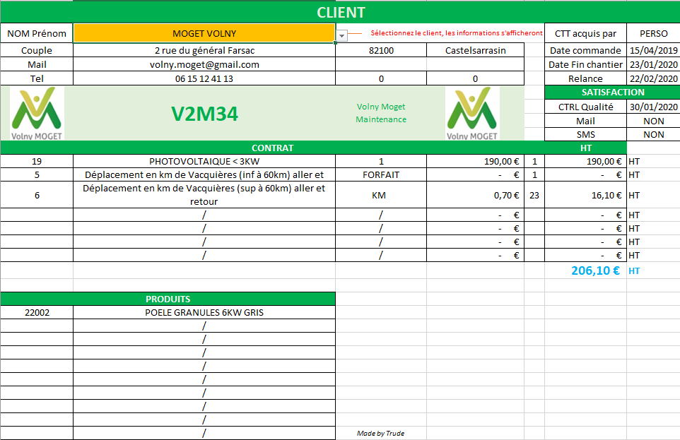

Gestion de Crise & RGPD
Simulation de Crise & Notification CNIL
Mise en place de PCA/PRA, analyse de risque et documentation de conformité en situation d'incident critique.
Accompagnement stratégique et opérationnel pour les entreprises du secteur Occitanie (Toulouse, Montauban, Agen, Castelsarrasin).

Fort de plus de 20 ans d'expérience en management opérationnel, direction technique et gestion d'unités de production, j'aide les PME à franchir les caps critiques de leur croissance.
Mise en place de Plans de Continuité d'Activité (PCA) et Plans de Reprise d'Activité (PRA) pour faire face aux sinistres et attaques informatiques.
Audit de maturité digitale, conformité RGPD (CNIL), gouvernance des données et accompagnement aux exigences réglementaires.
Intégration de solutions No-Code, automatisation des workflows et tableaux de bord décisionnels pour libérer du temps aux équipes.
Une réponse sur-mesure adaptée aux réalités opérationnelles des dirigeants.
PCA / PRA & Sécurité
Analyse des risques majeurs, protocoles d'urgence et procédures de sauvegarde pour garantir la pérennité des activités.
Protection des données
Sensibilisation des collaborateurs, cartographie des traitements, gestion des notifications CNIL et registres des données.
Digitalisation & Processus
Optimisation des flux de travail, suivi budgétaire, gestion des prestataires et amélioration de la rentabilité.
Exemples de réalisations et de procédures prêtes à l'emploi.
Mise en place de PCA/PRA, analyse de risque et documentation de conformité en situation d'incident critique.

Structure de gestion clients complète sous Excel avec calculs de marge et suivi de l'activité commerciale.